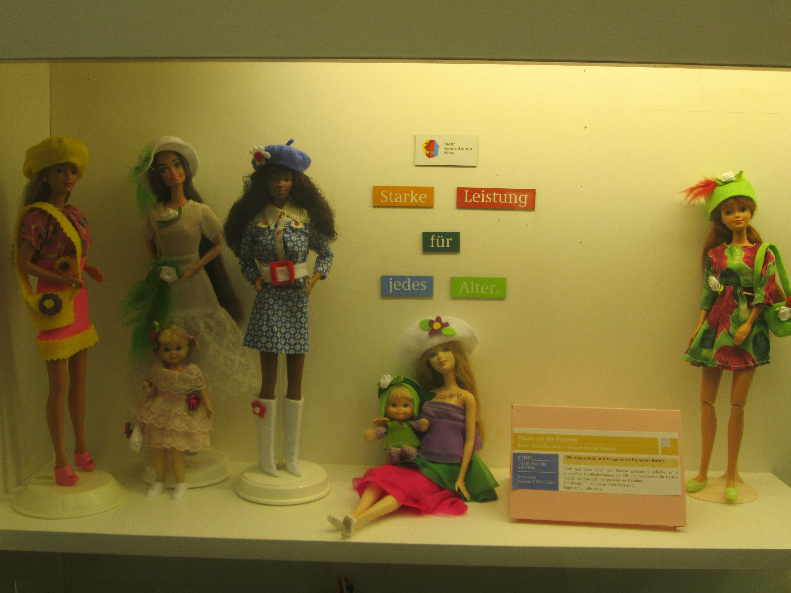
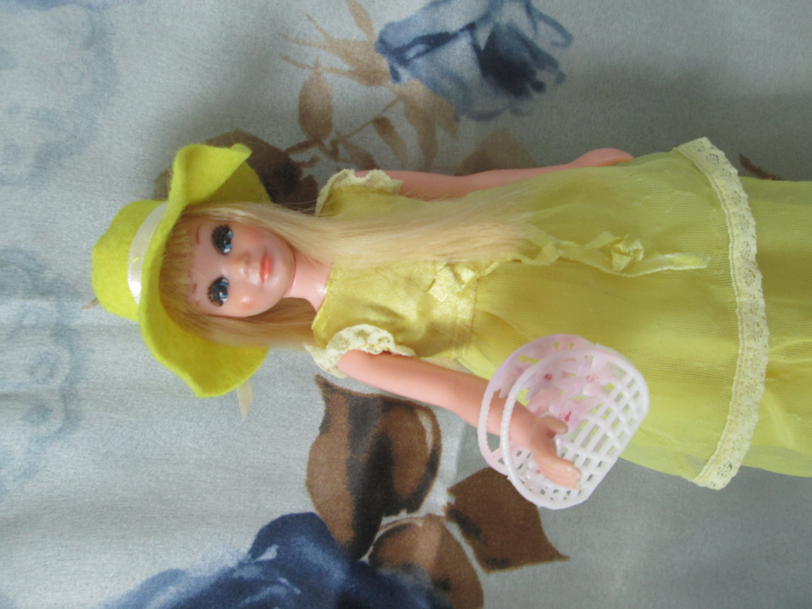
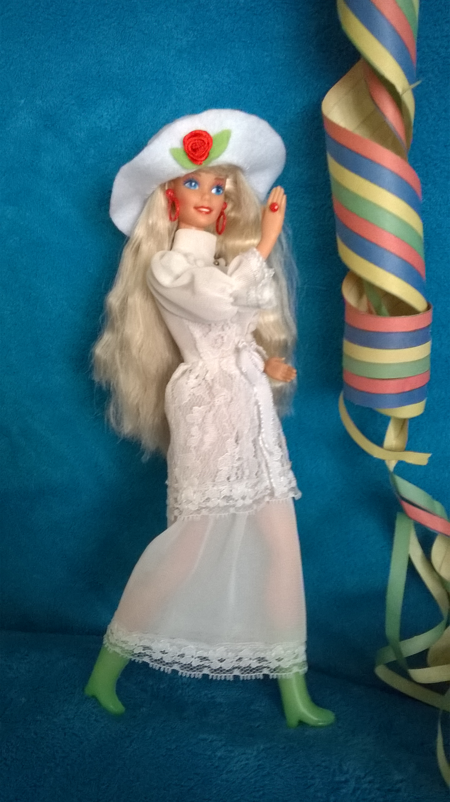

Hutdesign
Modepuppen eröffnen ein breites Spektrum für Kreativität. Mich hat im Besonderen die Fertigstellung
und Wirkung der Hut Modelle durch Form und Farben, in Verbindung mit der Gesamtwirkung der Puppe
interessiert.
Der Hut ist das I- Tüpfelchen, und rundet den Ausdruck von Kleidung, Accessoires, Make – up und Haaren
ab.






Im Gedenken an...

...meinen Großvater Wilhelm Sperlich, geboren 16. Mai 1902. Er arbeitete in einer Hutfabrik in Niederschlesien. Zum Kriegsdienst genötigt im 2. Weltkrieg. Im Ural vermisst. Am 31. Dezember 1945 für tot erklärt.